广西凌云不仅有神奇的岩洞，还有驰名中外的白毫茶，凌云白毫茶自古有之，县境内有一株古生茶树，根径达60厘米，胸径达40厘米，高度达20米，堪称"广西茶树王"。
凌云白毫茶生长在海拔800-1500米的青龙山上。距县城30公里的茶山金字塔，就是开辟于峰峦起伏、林密沟深、溪流纵横、人烟稀少、终年云雾缭绕的高山上。茶山金字塔是凌云县万亩高产茶园示范场的代名词，大大小小的几十个山头，被勤劳的凌云人一锄一锄地挖，一梯一梯地培，一行一行地种，形成一望无际的绿色山头。从高处往下看，大大小小的山头既像休憩田中，又像埃及的金字塔耸立旷野，旖旎的风光令人心旷神怡。
在凌云县的茶山上有着万亩的茶树 全国最好的白毫茶就在这里生长.
游览茶山，不仅可以领略到大自然的美景，还可以亲自采茶、制茶，体会到茶乡人甜蜜的劳动。来到茶山上，品一品天然的、绿色的、纯净的凌云白毫茶，这也是茶乡人为客人献上的一份厚礼，茶姑们会给你先泡上一壶绿茶，然后再泡上一壶红茶。整个过程有：鉴赏茶、备茶具、选清水、温壶洁具、洗茶、泡茶、分茶汤、选茶王、配茶后、敬茶仙、品尝茶等等。
凌云县是全国无公害茶叶生产基地县，茶山金字塔上的茶叶率先获得了无公害生产和标准化生产的证书，获得了"中国食品安全放心品牌"称号。茶山之行，既是农业风光之旅，又是生态之旅。来到茶山的人，决不会忘记留下一幅倩影。
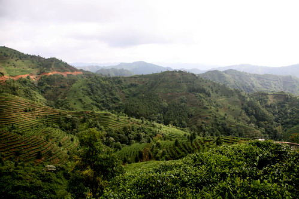
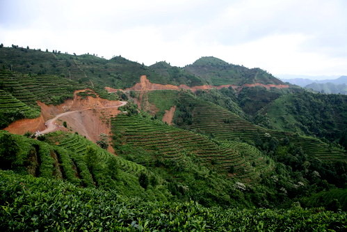
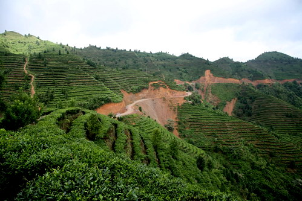
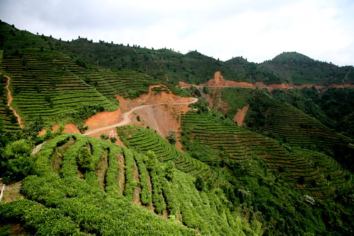
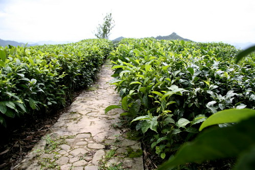
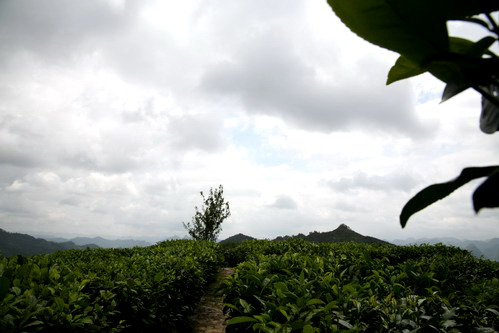
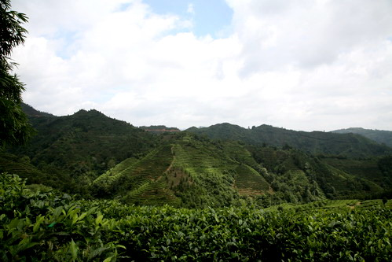
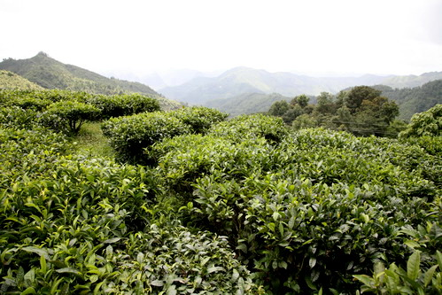
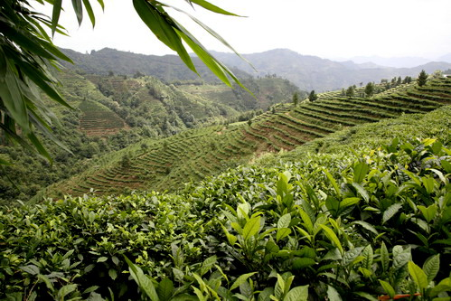
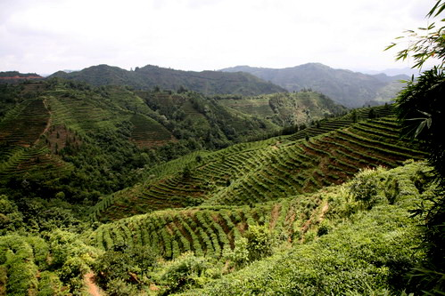
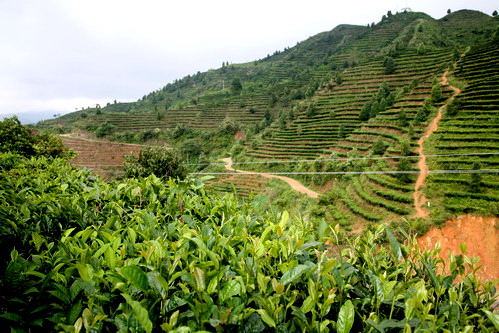
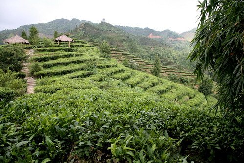